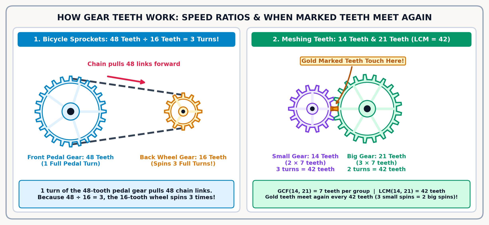
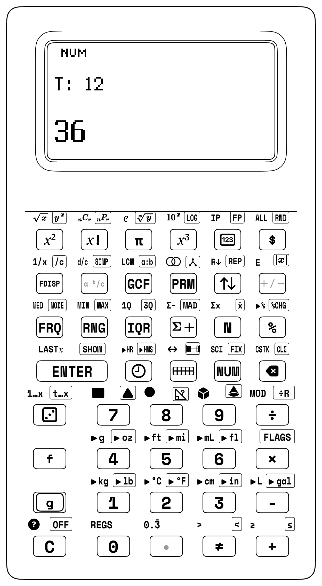
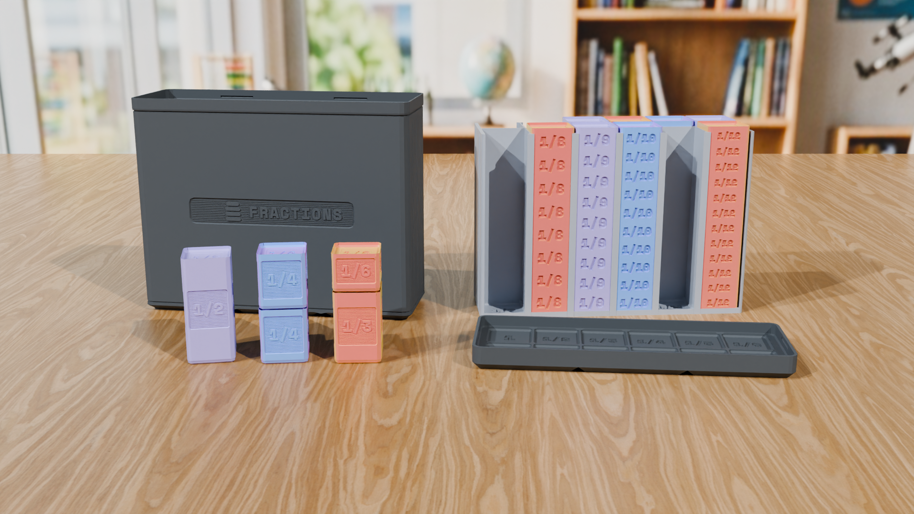
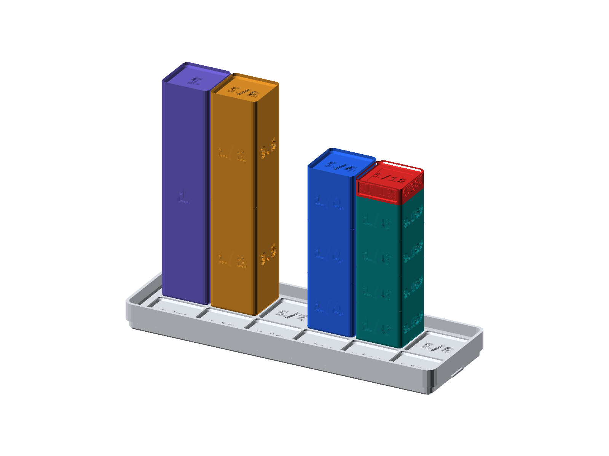
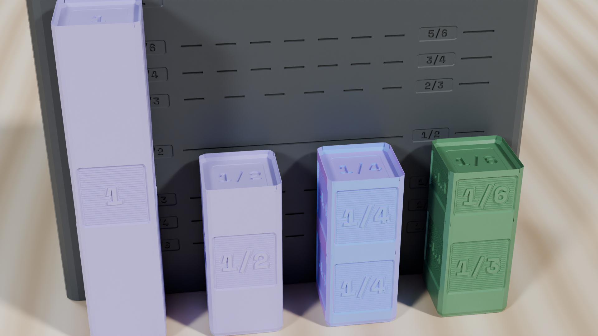
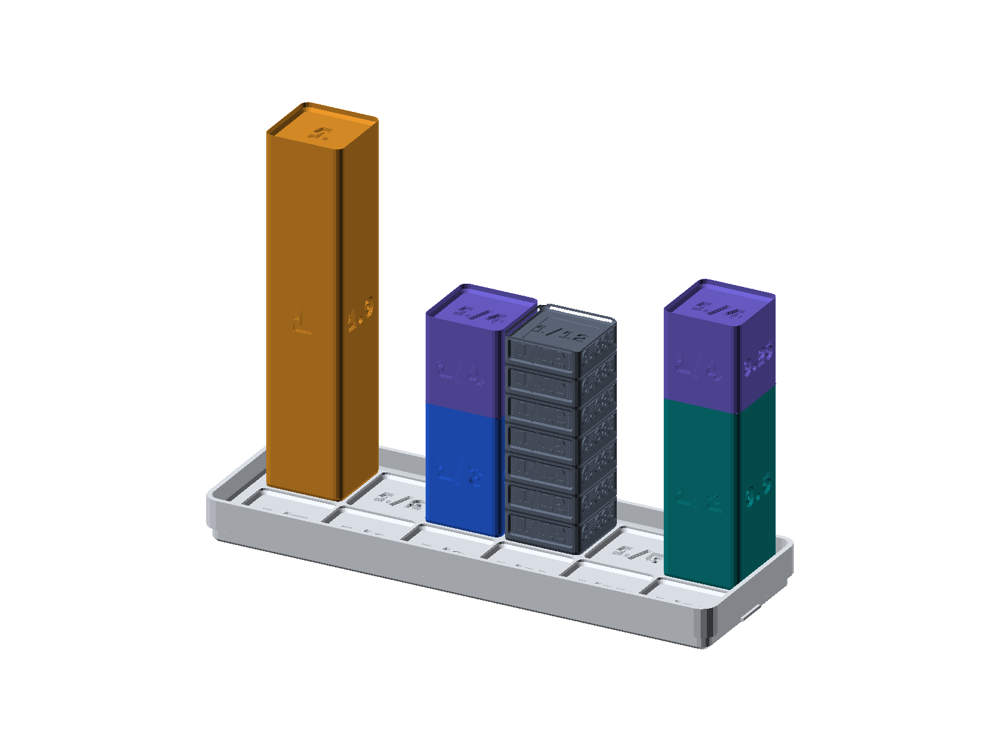

Chapter 5: Fractions, Decimals, Percents & Ratios
5.1 How Fractions and Ratios Run the Physical World
Grab four \(\frac{1}{8}\) blocks and one scarlet \(\frac{1}{2}\) block (\(42.0\text{ mm}\)) from your 84 mm Fraction Studio and drop them side by side into the Twin Comparator Well. Run your fingertip across their tops: they stand at the exact same \(42.0\text{ mm}\) height, proving in one touch why \(\frac{4}{8}\text{ inch}\) on a carpenter's tape measure is the exact same length as a \(\frac{1}{2}\text{ inch}\) bolt! Now type 0 [.] 4 [.] 8 [g] [SIMP] on your SC-6 and watch One-Tap GCF Simplify ([g] [SIMP]) divide out their Greatest Common Factor (\(4\)) in one tap so 4/8 simplifies straight to 1/2.
If fractions on a school worksheet ever made you groan, you are in famous company: for centuries, even adult astronomers, bakers, and surveyors dreaded adding awkward fractions by hand! In 9th-century Baghdad, the mathematician al-Khwarizmi wrote the first practical guides showing shopkeepers how to line up mismatched fractions on a common grid. Seven hundred years later, in 1585, Flemish engineer Simon Stevin published a tiny 36-page booklet called De Thiende (The Tenth) for everyday carpenters and tailors—showing how slicing \(1\text{ whole}\) into tenths (\(0.1\)) and hundredths (\(0.01\)) long before John Napier popularized the modern decimal point in 1614 (Napier, 1614) turns fraction arithmetic into whole-number place value, while Least Common Multiple ([f] [LCM]) snaps any two fractions onto the same grid. Peel back the cover of any machine (Macaulay, 2016), and every meshing pair of gears, pulley block, and guitar string is a living fraction in motion.
5.1.1 The Pharaoh's Bakery & Pythagoras's Guitar Strings
Why does your 84 mm Fraction Studio include every unit-fraction block from \(\frac{1}{2}\) (\(42.0\text{ mm}\)) and \(\frac{1}{3}\) (\(28.0\text{ mm}\)) down to \(\frac{1}{12}\) (\(7.0\text{ mm}\))? Because you can test two of history's coolest discoveries right in your tray! First, travel back to Ancient Egypt around 1550 BCE, when 4 temple bakers had to share 3 round loaves of bread equally (\(\frac{3}{4}\) of a loaf each). Instead of chopping every single loaf into four small pieces, the Egyptian bakers sliced the first two loaves in half—giving each baker one big \(\frac{1}{2}\) loaf—and cut only the third loaf into quarters (\(\frac{1}{4}\)). Try that in your Twin Comparator Well right now: dock one \(\frac{1}{2}\) block (\(42.0\text{ mm}\)) plus one \(\frac{1}{4}\) block (\(21.0\text{ mm}\)) in the left channel, and three \(\frac{1}{4}\) blocks (\(63.0\text{ mm}\)) in the right channel—both stand completely flush at \(63.0\text{ mm}\) (\(\frac{1}{2} + \frac{1}{4} = \frac{3}{4}\)), saving the bakers 4 knife cuts!
A thousand years later in ancient Greece, Pythagoras discovered that those exact same fractions create musical harmony when you pluck a stretched guitar or lute string: line up the 1 Whole block (\(84.0\text{ mm}\)), \(\frac{3}{4}\) (\(63.0\text{ mm}\)), \(\frac{2}{3}\) (\(56.0\text{ mm}\)), and \(\frac{1}{2}\) (\(42.0\text{ mm}\)) on your lid tray, and notice how pinching a guitar string at \(\frac{1}{2}\) its length sounds an Octave, \(\frac{2}{3}\) sounds a Perfect Fifth, and \(\frac{3}{4}\) sounds a Perfect Fourth:
| Keystroke | Register T | Register Z | Register Y | Register X | What Happens on the Stack |
|---|---|---|---|---|---|
0 [.] 1 [.] 2 [ENTER] |
0 | 0 | 1/2 | 1/2 | Put the Egyptian half-loaf \(\frac{1}{2}\) (\(42.0\text{ mm}\) block) onto Shelf \(Y\) |
0 [.] 1 [.] 4 [+] |
0 | 0 | 0 | 3/4 | Add the quarter-loaf \(\frac{1}{4}\) (\(21.0\text{ mm}\) block) to reach \(\frac{3}{4}\) (\(63.0\text{ mm}\)) |
5.1.2 Why Hot Dogs and Buns Come in Different Packs (LCM)
Every kid who has ever helped plan a picnic or family birthday barbecue has faced the greatest commercial puzzle in the grocery store: hot dogs come in packs of 10, while hot dog buns come in packs of 8. If you buy 1 pack of each, you have 2 extra wieners and zero buns. If you buy 2 packs of buns (16) and 2 packs of hot dogs (20), you now have 4 extra dogs. How many packages must you buy so that every single hot dog gets a bun with zero leftovers?
To rescue the picnic mathematically, you are searching for the Least Common Multiple (LCM)—the smallest positive whole number that is a multiple of both 10 and 8:
The meeting point is 40, because \(40 \div 10 = \mathbf{4}\text{ packs of hot dogs}\) and \(40 \div 8 = \mathbf{5}\text{ packs of buns}\). Four packs of dogs plus five packs of buns yields 40 hot dogs tucked neatly into 40 buns. Even better, on your SC-6 you can find that meeting point in a single click: press 10 [ENTER] 8 [f] [LCM] and the screen immediately flashes 40!
Least Common Multiple isn't just for hot dogs—it is your key to adding different-sized fraction slices. Plant \(\frac{1}{6}\) of a garden bed with cherry tomatoes and \(\frac{3}{8}\) of the bed with strawberries, and you can't just add \(1 + 3\), because a sixth-slice and an eighth-slice are different sizes. You need the smallest slice size that fits evenly inside both: \(\text{LCM}(6, 8) = 24\) (twenty-fourths, where \(\frac{1}{6} = \frac{4}{24}\) and \(\frac{3}{8} = \frac{9}{24}\), totaling \(\frac{13}{24}\) of the garden).
5.1.3 Polyrhythms at the Drum Kit: Where Beats Meet
Ever listen to an Afro-Cuban groove, a jazz drum solo, or a modern hip-hop beat where the rhythm seems to float, dance, and pull against itself? That rhythmic tension is powered directly by number theory.
Imagine a drummer playing a "3-against-4" polyrhythm, where the right hand taps a steady pulse every 4 clock ticks (\([4, 8, \mathbf{12}, 16, 20, \mathbf{24}, \dots]\)) while the left hand plays a cross-pulse every 3 clock ticks (\([3, 6, 9, \mathbf{12}, 15, 18, 21, \mathbf{24}, \dots]\)). As the music plays, the two hands wander apart, creating musical tension. The listener's ear holds its breath. But then—CRASH! Both hands strike the cymbals at the exact same microsecond.
When does the pattern resolve? At tick 12—the Least Common Multiple of 3 and 4 (\(\text{LCM}(3, 4) = 12\)). The entire universe of musical syncopation and harmonic acoustics is governed by common denominators.
5.1.4 Why Racing Bicycles Use "Hunting Tooth" Gears (GCF)
Look closely at the steel chain and sprockets on a professional racing bicycle. Picture a drivetrain where the chainring at the crank has 34 teeth and the rear cog has 17 teeth.
Notice something dangerous? \(34 = 2 \times 17\). Their Greatest Common Factor is 17 (because 17 divides evenly into both 34 and 17).
If a bicycle were built with that ratio, the exact same chain link would slam into the exact same cog tooth on every second pedal revolution. If that one link picks up a microscopic speck of diamond-hard road grit, it will hammer into that identical tooth thousands of times an hour, gouging a groove and wearing out the sprocket.
Bicycle engineers prevent this wear by choosing gear tooth counts that share no common factor greater than 1 (their Greatest Common Factor is \(1\), a pattern we explore in depth in Chapter 7). When the two gear tooth numbers share no common factor greater than 1, each chain link "hunts" around every single tooth on the entire sprocket before ever repeating. Wear is spread evenly across all teeth, allowing the chain to last for thousands of miles.

Look at the two gear systems in the diagram above. In Panel 1 (Bicycle Sprockets), when your foot turns a 48-tooth front pedal gear one full turn, the chain pulls 48 links forward and wraps them around a smaller 16-tooth back wheel gear—and because \(48 \div 16 = 3\), one turn of your pedals spins the back wheel 3 full turns! In Panel 2 (Meshing Gear Teeth), when a 14-tooth gear meshes directly with a 21-tooth gear, each tooth on the small gear pushes one tooth on the big gear. If you mark the touching pair of teeth with gold paint, when will those two gold teeth touch again? Only when the total number of teeth that have clicked past the center point is a multiple of both \(14\) and \(21\)—which happens at \(\text{LCM}(14, 21) = \mathbf{42\text{ teeth}}\) (\(3\) turns of the small gear and \(2\) turns of the big gear)!
Throughout this chapter, you will pair your \(84\text{ mm}\) Fraction Towers with two-dot fraction entry ([.] for 0 . n . d, n . . d, . n . d, and w . n . d) and Fraction/Decimal Display Mode ([FDISP]), flipping effortlessly between Mixed Numbers ([a ᵇ/c]), Improper Fractions ([f] [d/c]), and Repeating Decimals ([f] [0.3̄]). You will divide out the Greatest Common Factor in a single tap with [g] [SIMP], find common denominators and shared factors with [f] [LCM] and [GCF], and scale recipes and gear ratios in Ratio Mode ([g] [a:b]).

5.1.5 Why Your Fraction Towers Stand 84 Millimeters Tall
Think back to the Pharaoh's bread loaves, the hot dog packs, and the bicycle gears we just met. Whether you are sharing bread into halves and quarters, lining up 3-against-4 drumbeats at tick \(12\), or comparing different-sized slices, the hardest part of fractions on paper is that the numbers \(\frac{3}{4}\) and \(\frac{2}{3}\) look like flat symbols trapped on a page—you can't feel how big \(\frac{3}{4}\) is compared to \(\frac{2}{3}\)!
That is why your StackCalc Fraction Studio turns fractions into real physical towers you can hold in your hands. And why did our engineers choose \(84.0\text{ millimeters}\) as the height of the 1-Whole Tower instead of \(100\text{ mm}\)?
Because \(84\) is a super-divisible number! While \(100\) cannot be divided cleanly by \(3\), \(6\), or \(12\) without leaving ragged decimals, \(84\text{ mm}\) divides cleanly into whole-millimeter heights across almost every fraction family in your kit—and its \(\frac{1}{12}\) slice (\(7.0\text{ mm}\)) matches the exact visible height of a single Counting Tile.
5.1.6 Seeing \(\frac{3}{4} + \frac{2}{3} = 1\frac{5}{12}\) Before You Touch a Pencil
Watch how your \(84\text{ mm}\) Fraction Towers take the mystery out of adding fractions with different denominators, like \(\frac{3}{4} + \frac{2}{3}\). On paper alone, adding \(\frac{3}{4} + \frac{2}{3}\) requires finding the Least Common Multiple of 4 and 3 (\(12\)), rewriting \(\frac{3}{4} = \frac{9}{12}\) and \(\frac{2}{3} = \frac{8}{12}\), adding \(9 + 8 = \frac{17}{12}\), and converting to \(1\frac{5}{12}\). In your hands, however, you can see the answer in five seconds! Drop the \(\frac{3}{4}\) tower (\(63.0\text{ mm}\)) and the \(\frac{2}{3}\) tower (\(56.0\text{ mm}\)) into the left channel of your Twin Comparator Well (\(63.0 + 56.0 = 119.0\text{ mm}\)), and drop the white 1-Whole tower (\(84.0\text{ mm}\)) into the right channel beside them. Your \(\frac{3}{4} + \frac{2}{3}\) stack sticks up above 1 Whole by \(35.0\text{ mm}\)—and when you stack five \(\frac{1}{12}\) lilac blocks (\(5 \times 7.0\text{ mm} = 35.0\text{ mm}\)) on top of the 1-Whole tower, both channels stand completely flush at \(1\frac{5}{12}\)! Then key in 0 [.] 3 [.] 4 [ENTER] 0 [.] 2 [.] 3 [+] on your SC-6 stack: the screen immediately shows 1 5/12 (or 17/12 if you tap [f] [d/c], and 1.41666667 if you tap [FDISP]), while keeping fractions unreduced whenever you multiply so you can reduce by their Greatest Common Factor in one tap with [g] [SIMP].

5.1.7 Meet Every Tower in Your \(84.0\text{ mm}\) Fraction Family
Every color-coded block in your kit is an exact slice of the \(84.0\text{ mm}\) 1-Whole white tower, and rotating any block in your hand reveals three laser-marked faces—the Front Face (common fraction), the Right Face (decimal twin), and the Back Face (percentage twin):
| Fraction Tower | Studio Color | Exact Height | Blocks per Whole (\(84\text{ mm}\)) | Front, Right & Back Laser Labels |
|---|---|---|---|---|
1 WHOLE Tower |
Bright White | \(84.0\text{ mm}\) | \(1 \times 84.0\text{ mm}\) | 1 WHOLE • 1.0 • 100% |
1/2 Halves |
Scarlet Red | \(42.0\text{ mm}\) | \(2 \times 42.0\text{ mm}\) | 1/2 • 0.5 • 50% |
1/3 Thirds |
Solar Yellow | \(28.0\text{ mm}\) | \(3 \times 28.0\text{ mm}\) | 1/3 • 0.3̄ • 33.3% |
1/4 Fourths |
Cobalt Blue | \(21.0\text{ mm}\) | \(4 \times 21.0\text{ mm}\) | 1/4 • 0.25 • 25% |
1/6 Sixths |
Emerald Green | \(14.0\text{ mm}\) | \(6 \times 14.0\text{ mm}\) | 1/6 • 0.16̄ • 16.7% |
1/8 Eighths |
Cyan Blue | \(10.5\text{ mm}\) | \(8 \times 10.5\text{ mm}\) | 1/8 • 0.125 • 12.5% |
1/12 Twelfths |
Lilac Purple | \(7.0\text{ mm}\) (\(1\text{U}\)) | \(12 \times 7.0\text{ mm}\) | 1/12 • 0.083̄ • 8.3% |
Holding a single cobalt-blue block lets your eyes see immediately that \(\frac{1}{4}\), \(0.25\), and \(25\%\) are three names for the exact same physical size!
5.1.8 Proving Equivalence in the Twin Comparator Well
The storage case for your Fraction Studio includes a side-by-side channel called the Twin Comparator Well. Whenever you want to know whether two fractions are equal—or which one is bigger—you simply stand them side by side in Well A and Well B and slide your fingertip across the top edge!

Try two hands-on experiments right now: 1. Two Halves Make One Whole (\(\frac{2}{2} = 1\)): Place the white 1-Whole tower (\(84.0\text{ mm}\)) into Well A, and stack two scarlet \(\frac{1}{2}\) towers (\(42.0\text{ mm} + 42.0\text{ mm} = 84.0\text{ mm}\)) into Well B. Slide your finger across the top: there is zero step between them, proving \(\frac{2}{2} = 1\). 2. Which Is Bigger: \(\frac{3}{4}\) or \(\frac{4}{6}\)? (And How Much Bigger?): Stack three blue \(\frac{1}{4}\) blocks in Well A (\(3 \times 21.0\text{ mm} = 63.0\text{ mm}\)) and four green \(\frac{1}{6}\) blocks in Well B (\(4 \times 14.0\text{ mm} = 56.0\text{ mm}\)). Slide your finger across the top: Well A stands taller than Well B by \(7.0\text{ mm}\), proving \(\frac{3}{4} > \frac{4}{6}\)! Now grab 1 Counting Tile (\(7.0\text{ mm}\) visible height, which is \(\frac{1}{12}\) of \(84\text{ mm}\)) from your Counting Studio and drop it on top of the \(\frac{4}{6}\) stack in Well B (\(56.0 + 7.0 = 63.0\text{ mm}\)). Run your finger across again—completely flush! Your fingertips just discovered that \(\frac{4}{6} + \frac{1}{12} = \frac{3}{4}\).
Now watch the SC-6 stack confirm what your hands just felt—enter \(\frac{4}{6}\) (0 [.] 4 [.] 6 [ENTER]), add \(\frac{1}{12}\) (0 [.] 1 [.] 12 [+]) to see the unreduced twelfths sum 9/12, and tap [g] [SIMP] to reduce it to 3/4:
| Keystroke | Register T | Register Z | Register Y | Register X | What Happens on the Stack |
|---|---|---|---|---|---|
0 [.] 4 [.] 6 |
0 | 0 | 0 | 4/6 | Build the green tower fraction \(\frac{4}{6}\) (\(56.0\text{ mm}\)) on Shelf \(X\) |
[ENTER] |
0 | 0 | 4/6 | 4/6 | Lift \(\frac{4}{6}\) onto Shelf \(Y\) without reducing it |
0 [.] 1 [.] 12 |
0 | 0 | 4/6 | 1/12 | Build the \(\frac{1}{12}\) bridge tile (\(7.0\text{ mm}\)) on Shelf \(X\) |
[+] |
0 | 0 | 0 | 9/12 | Add in twelfths (\(\frac{8}{12} + \frac{1}{12} = \frac{9}{12}\)) on Shelf \(X\) |
[g] [SIMP] |
0 | 0 | 0 | 3/4 | Divide out the shared factor of 3 to reach \(\frac{3}{4}\) (\(63.0\text{ mm}\)) |
5.2 Building, Simplifying & Adding Fractions Step by Step
Now that your hands have felt how the \(84.0\text{ mm}\) Fraction Towers line up in the Twin Comparator Well, let's see how to enter, multiply, divide, simplify, and add any pair of fractions right on the SC-6 stack.
5.2.1 Entering Fractions with Two Dots
Did you notice how quickly we entered 4/6 and 1/12 in the table above using the dot key [.]? Instead of hunting for a fraction-template button or arrowing up and down between little boxes, you build a fraction from top to bottom on the SC-6 using the single button your fingers already know best—the dot key ([.]). Think of the first dot ([.]) as separating the whole number from the numerator and the second dot ([.]) as drawing the fraction bar (/) between the top number (numerator) and bottom number (denominator). From default Whole Number Mode ([NUM]), you can enter a Proper Fraction like \(\frac{3}{8}\) either by typing 0 before the first dot (0 [.] 3 [.] 8) or by double-tapping the dot (3 [.] [.] 8) so the display shows 3/8—and once Fraction Display ([FDISP]) is active (or [NUM] is toggled off), you can also use the leading-dot shorthand [.] 3 [.] 8! If your fraction has a whole number in front—like the Mixed Number \(2\frac{3}{4}\)—simply type the whole number before the first dot (2 [.] 3 [.] 4 \(\longrightarrow\) 2 3/4), or enter it directly as an Improper Fraction (\(\frac{11}{4}\)) by tapping 0 [.] 11 [.] 4 (or 11 [.] [.] 4 / [.] 11 [.] 4) \(\longrightarrow\) 11/4.
The moment your finger taps that second dot [.], the calculator knows you are building a fraction and displays it clearly on your vertical stack screen (with Waiting Shelf \(Y\) right above Ground Shelf \(X\)), automatically sizing the digits so nothing ever gets cut off:
| Fraction Type or View | What You Key on the SC-6 | What Appears on Shelf \(X\) | Physical \(84\text{ mm}\) Tower Match |
|---|---|---|---|
| Proper Fraction (\(\frac{3}{8}\)) | 0 [.] 3 [.] 8 (or [.] 3 [.] 8) |
3/8 |
Three cyan \(\frac{1}{8}\) blocks (\(31.5\text{ mm}\)) |
| Mixed Number (\(2\frac{3}{4}\)) | 2 [.] 3 [.] 4 |
2 3/4 |
Two Whole towers + three \(\frac{1}{4}\) blocks |
Improper Toggle ([f] [d/c]) |
Tap [f] [d/c] on 2 3/4 |
11/4 |
Eleven blue \(\frac{1}{4}\) blocks stacked |
Decimal Toggle ([FDISP]) |
Tap [FDISP] on 2 3/4 |
2.75 |
Right-hand decimal face of the tower |
5.2.2 Fractions in Musical Strings and Chocolate Bars
Just as your physical Fraction Towers show fraction, decimal, and percent faces when you turn them in your hand, three keys let you flip how any number looks on screen at any time: Mixed Number View ([a ᵇ/c]) shows whole units plus the leftover fraction (turning 11/4 into 2 3/4), Improper Fraction View ([f] [d/c]) packs the whole units inside the numerator so you can count total slices (turning 2 3/4 into 11/4), and the Fraction / Decimal Toggle ([FDISP]) flips back and forth between exact fraction view and decimal view (3/4 \(\longleftrightarrow\) 0.75).
In real music, sheet music opens with a fraction-like time signature (\(\frac{3}{4}\), \(\frac{6}{8}\), or \(\frac{5}{8}\)), and pressing a guitar string against a fret divides the vibrating string into an exact fraction of its full length. In a song's 8-beat measure, when a drummer plays a fill covering \(\frac{5}{8}\) of the bar—or a guitarist presses a string at the 8th fret so \(\frac{5}{8}\) of the string vibrates to sound a minor sixth—you can stack five cyan \(\frac{1}{8}\) Fraction Studio blocks (\(5 \times 10.5\text{ mm} = 52.5\text{ mm}\)) in the Comparator Well to feel that exact proportion against the \(84\text{ mm}\) Whole tower. Build the fraction from top to bottom with two dots via [.] 5 [.] 8 [ENTER], and the stack displays 5/8:
| Keystroke | Register T | Register Z | Register Y | Register X | What Happens on the Stack |
|---|---|---|---|---|---|
0 [.] 5 [.] 8 |
0 | 0 | 0 | 5/8 | Two dots enter the top number 5 and bottom number 8 on Shelf \(X\) |
[ENTER] |
0 | 0 | 5/8 | 5/8 | Lift the fraction onto Shelf \(Y\) as an exact fraction |
The daylight display confirms \(X = 5/8\) as an exact fraction without any decimal rounding, matching the five cyan eighth-blocks in your Twin Comparator Well down to the half-millimeter.
Now picture \(3\ \frac{2}{5}\) large chocolate bars on the kitchen table, where each bar is molded with deep grooves dividing it into 5 equal strips so friends can break off equal shares. How many individual \(\frac{1}{5}\text{-bar}\) strips can you hand out in all?
Place 3 full 1-Whole towers beside two \(\frac{1}{5}\) blocks to see the whole bars and the extra strips side by side on your tray. Enter 3 . 2 . 5 (putting the whole number 3 before the first dot) and tap [f] [d/c] to unpack all the whole bars into fifths: [3] [.] 2 [.] 5 [ENTER] [f] [d/c] converts the mixed number on Shelf \(X\) into 17/5.
Why does \(3\ \frac{2}{5}\) turn into \(\frac{17}{5}\)? Because each of the \(3\) whole chocolate bars breaks into \(5\) fifth-sized strips (\(3 \times 5 = 15\) strips), and adding the \(2\) extra strips gives \(17\) fifth-sized chocolate strips (\(\frac{17}{5}\)) in all—while your original mixed number (\(3\ \frac{2}{5}\)) stays right on Shelf \(Y\) so you can see both forms side by side.
5.2.3 Seeing the True Grid First: Unreduced Fractions & One-Tap GCF Reduction
When you multiply \(\frac{1}{2} \times \frac{2}{3}\) on a standard school calculator, the moment you press equals, the screen jumps straight to 1/3.
Why is that actually a problem when you are learning fractions? Because if the calculator jumps straight from \(\frac{1}{2} \times \frac{2}{3}\) to \(\frac{1}{3}\), it hides the most important rule of fraction multiplication: multiplying the numerators (\(1 \times 2 = 2\)) and multiplying the denominators (\(2 \times 3 = 6\)) to get \(\frac{2}{6}\)!
On the SC-6, arithmetic never hides your intermediate steps. When you multiply \(\frac{1}{2} \times \frac{2}{3}\), the screen first displays your true unreduced product—2/6—so you can see how the numerators and denominators multiplied straight across. Then, when you are ready to reduce the fraction, you press One-Tap GCF Simplify ([g] [SIMP]) to divide out the Greatest Common Factor in one tap and reveal 1/3 (or flash LOWEST TERMS when a fraction cannot be reduced any further):
| Operation | Unreduced Output | Next Step with [g] [SIMP] |
|---|---|---|
| Like Addition: \(2/4 + 1/4\) | \(3/4\) | LOWEST TERMS alert |
| Like Addition: \(2/4 + 2/4\) | \(4/4\) (retains \(4/4\)) | [g] [SIMP] \(\to 1\) |
| Like Subtraction: \(3/4 - 1/4\) | \(2/4\) (retains \(2/4\)) | [g] [SIMP] \(\to 1/2\) |
| Unlike Addition: \(1/2 + 1/4\) | \(3/4\) (common denom \(4\)) | LOWEST TERMS alert |
| Multiply: \(2/3 \times 3/4\) | \(6/12\) | [g] [SIMP] \(\to 1/2\) |
| Divide: \(2/3 \div 1/4\) | \(8/3\) (\(2/3 \times 4/1\)) | [a ᵇ/c] \(\to 2\frac{2}{3}\) |
5.2.4 Robot Speed Gears & Cross-Canceling
Seeing the unreduced fraction first also helps you understand a famous shortcut your teacher will show you on paper called cross-canceling.
Imagine building a 3-stage robot gear train where each gear slows the spin down for extra climbing power. Gear 1 spins at \(\frac{1}{2}\) the motor's speed, Gear 2 spins at \(\frac{2}{3}\) of Gear 1's speed, and Gear 3 spins at \(\frac{3}{4}\) of Gear 2's speed. How fast does Gear 3 spin compared to the motor? You can test two different pathways to find out. First, try multiplying straight across and then pressing [g] [SIMP]: multiply all the numerators (\(1 \times 2 \times 3 = 6\)) and all the denominators (\(2 \times 3 \times 4 = 24\)) by keying 0 [.] 1 [.] 2 [ENTER] 0 [.] 2 [.] 3 [×] 0 [.] 3 [.] 4 [×] (\(\to \mathbf{6/24}\)), and then tap [g] [SIMP] to shrink \(\frac{6}{24} \longrightarrow \mathbf{\frac{1}{4}}\).
Now compare that with the paper shortcut of cross-canceling shared factors before you multiply. Look at the numerators and denominators side by side: there is a \(2\) on the bottom and a \(2\) on top, plus a \(3\) on the bottom and a \(3\) on top! Canceling those matching pairs (\(\frac{2}{2} = 1\) and \(\frac{3}{3} = 1\)) leaves the answer right away:
$\(\frac{1}{\cancel{2}} \times \frac{\cancel{2}}{\cancel{3}} \times \frac{\cancel{3}}{4} = \mathbf{\frac{1}{4}}\)$
The middle gears act like bridges—only the first numerator (\(1\)) and last denominator (\(4\)) survive! You can see that same "fraction of a fraction" gear reduction at work on a \(24\text{-RPM}\) robot axle: when a drive shaft spins at \(24\text{ revolutions per minute (RPM)}\) and passes through a \(\frac{1}{3}\) gear stage followed by a \(\frac{1}{4}\) gear stage, multiplying \(\frac{1}{3} \times \frac{1}{4} = \frac{1}{12}\) finds the combined gear ratio, and tapping 24 [×] (\(\longrightarrow \mathbf{2\text{ RPM}}\)) shows that the robot's climbing wheel turns at a steady, high-torque \(2\text{ RPM}\).
5.2.5 Multiplying Fractions and Scaling Mixed Numbers
Let's see how fraction multiplication works in two everyday situations—first multiplying proper fractions to see the unreduced grid before pressing [g] [SIMP], and then scaling a mixed-number measurement by \(1\ \frac{1}{2}\) times.
Cut a rectangular canvas or carbon-fiber patch measuring \(\frac{2}{3}\text{ meter}\) wide by \(\frac{3}{4}\text{ meter}\) long—what is its area in square meters? Picture folding a \(1\text{-meter}\) square into \(3\) columns (taking \(2\)) and \(4\) rows (taking \(3\)): the overlapping patch covers \(2 \times 3 = 6\) out of \(3 \times 4 = 12\) mini-rectangles (\(\frac{6}{12}\)). Multiply on the stack so you can see the unreduced \(\frac{6}{12}\) grid first, and then tap [g] [SIMP] to divide out the Greatest Common Factor of \(6\) in one tap: keying in [.] 2 [.] 3 [ENTER] [.] 3 [.] 4 [×] [g] [SIMP] shows 6/12 and then reduces it to 1/2:
| Keystroke | Register T | Register Z | Register Y | Register X | What Happens on the Stack |
|---|---|---|---|---|---|
0 [.] 2 [.] 3 [ENTER] |
0 | 0 | 2/3 | 2/3 | Put the width \(\frac{2}{3}\text{ m}\) onto Shelf \(Y\) |
0 [.] 3 [.] 4 [×] |
0 | 0 | 0 | 6/12 | Multiply by length \(\frac{3}{4}\text{ m}\); shows \(\frac{6}{12}\) before simplifying so you can see the matching twelfths |
[g] [SIMP] |
0 | 0 | 0 | 1/2 | Tap [g] [SIMP] to reduce \(\frac{6}{12}\) to \(\frac{1}{2}\text{ m}^2\) |
What if a recipe or bike-fork oil service calls for \(2\ \frac{1}{4}\text{ ounces}\) (or cups), and you want to make \(1\ \frac{1}{2}\) batches? How much do you measure out?
In improper fractions, \(2\ \frac{1}{4}\) is \(\frac{9}{4}\) and \(1\ \frac{1}{2}\) is \(\frac{3}{2}\), so their product is \(\frac{27}{8}\) ounces. Watch the SC-6 multiply the mixed numbers directly and convert \(\frac{27}{8}\) back into whole ounces and eighths with [a ᵇ/c]: [2] [.] 1 [.] 4 [ENTER] [1] [.] 1 [.] 2 [×] [a ᵇ/c] lands right on 3 3/8. Because \(24\) eighths fill \(3\) whole ounces and leave \(3\) eighths left over, your measuring cup reaches the \(3\ \frac{3}{8}\text{-ounce}\) line.
5.2.6 Visual Ways to Understand Fraction Division: Measurement & Partitive Models
When you first see a fraction division problem like \(\frac{3}{4} \div \frac{1}{8} = 6\), you might ask a great question: "Wait—how can dividing make the answer BIGGER (\(6\))?"
Think about what \(12 \div 3 = 4\) means with whole numbers: it asks, "How many groups of \(3\) fit inside \(12\)?" Now ask the exact same question for \(\frac{3}{4} \div \frac{1}{8}\): "How many \(\frac{1}{8}\text{-size}\) blocks fit inside a \(\frac{3}{4}\text{-size}\) tower?" Because \(\frac{1}{8}\) blocks are small, you can fit 6 of them inside \(\frac{3}{4}\)! You can see and prove this Measurement (Quotitive) Division model three ways:
- Physical Fraction Tower Alignment: Stack three blue \(\frac{1}{4}\) blocks (\(3 \times 21.0\text{ mm} = 63.0\text{ mm}\)) in Well A of your 84 mm Fraction Studio, and stack cyan \(\frac{1}{8}\) blocks (\(10.5\text{ mm}\) each) in Well B until both towers stand flush. It takes exactly 6 cyan \(\frac{1}{8}\) blocks (\(6 \times 10.5\text{ mm} = 63.0\text{ mm}\)) to match \(\frac{3}{4}\)!
- Common-Denominator Measurement Division: Rewrite both fractions using the same block size (eighths, since \(\frac{3}{4} = \frac{6}{8}\)). Now the question is simply "How many \(1\text{-eighths}\) fit inside \(6\text{-eighths}\)?" $\(\frac{3}{4} \div \frac{1}{8} = \frac{6}{8} \div \frac{1}{8} = 6\text{ eighths} \div 1\text{-eighth} = 6 \div 1 = \mathbf{6}\)$
- Multiplying by the Reciprocal (
[f] [1/x]): Because eight \(\frac{1}{8}\) blocks fit inside \(1\) Whole, dividing by \(\frac{1}{8}\) is the same as multiplying by its flipped partner (the reciprocal \(\frac{8}{1}\), which you can see anytime with the[f] [1/x]key): $\(\frac{3}{4} \times \frac{8}{1} = \frac{24}{4} = \mathbf{6}\)$
What if the divisor does not fit a whole number of times into the dividend, as in \(\frac{1}{2} \div \frac{3}{4} = \frac{2}{3}\)? That is where the universal Partitive "Split & Rebuild 1 Full Tower" (\(\div c\) then \(\times d\)) model shines! - The Partitive Question: "If a \(\frac{1}{2}\) block (\(42.0\text{ mm}\)) is \(\frac{3}{4}\) of a mystery tower, how tall is \(1\) full mystery tower (\(\frac{1}{2} \div \frac{3}{4}\))?" - Step 1 — Split by the Numerator (\(\div 3\)): Because your \(42.0\text{ mm}\) half-tower represents \(3\) fourths of the mystery tower, split \(42.0\text{ mm}\) into \(3\) equal parts to find \(\frac{1}{4}\) of the mystery tower: three green \(\frac{1}{6}\) blocks (\(14.0\text{ mm}\) each, since \(42.0\text{ mm} \div 3 = 14.0\text{ mm}\)). - Step 2 — Rebuild by the Denominator (\(\times 4\)): Now stack \(4\) of those \(\frac{1}{6}\) blocks together (\(4 \times 14.0\text{ mm} = 56.0\text{ mm} = \frac{4}{6} = \frac{2}{3}\)) in Well B to build all \(\frac{4}{4}\) (\(1\) full mystery tower)—physically proving why dividing by \(\frac{c}{d}\) always splits by \(c\) (\(\div c\)) and rebuilds by \(d\) (\(\times d\)), which is multiplying by the reciprocal \(\frac{d}{c}\)! (Classroom Pod Note: When building towers that require extra sixth-blocks or twelfth-blocks across both comparator wells, partner pairs in a 4-kit table pod can pool their sixth- and twelfth-blocks.)
Once you picture fraction division both ways—"how many slices fit inside?" and "split by the top, rebuild by the bottom"—everyday kitchen and workshop puzzles click right into place. Suppose you are prepping trail mix for a Saturday hike: a big mixing bowl holds \(4\frac{1}{2}\text{ cups}\) of trail mix, and each hiker's snack bag holds \(\frac{3}{8}\text{ cup}\). Keying 4 [.] 1 [.] 2 [ENTER] 0 [.] 3 [.] 8 [÷] (\(\frac{9}{2} \div \frac{3}{8} = \frac{36}{8} \div \frac{3}{8} = 36 \div 3\)) reveals that you can pack \(12\) full snack bags. The exact same slicing question works when you are cutting craft ribbon for tournament medals: if you have a \(6\text{-meter}\) roll of satin ribbon and snip it into \(\frac{3}{20}\text{-meter}\) strips (\(15\text{ cm}\) each), keying 6 [ENTER] 0 [.] 3 [.] 20 [÷] shows you will get 40 strips with zero ribbon wasted. And once you can multiply or divide two fractions on their own, you are ready to chain both moves together in a single run.
5.2.7 Chaining Mixed-Number Multiplication and Division in One Flow
What happens when a woodworking or baking project combines mixed-number multiplication and fraction division in a single expression, like \((3\ \frac{1}{2} \times 2\ \frac{2}{3}) \div 1\ \frac{1}{6}\)? Under the hood, \(\frac{7}{2} \times \frac{8}{3} = \frac{28}{3}\), and dividing by \(\frac{7}{6}\) flips and multiplies (\(\frac{28}{3} \times \frac{6}{7} = 4 \times 2 = 8\)). Watch two-dot RPN glide straight to 8 in 17 keystrokes when you key in 3 [.] 1 [.] 2 [ENTER] 2 [.] 2 [.] 3 [×] 1 [.] 1 [.] 6 [÷] [a ᵇ/c] to land on 8:
| Keystroke | Register T | Register Z | Register Y | Register X | What Happens on the Stack |
|---|---|---|---|---|---|
3 [.] 1 [.] 2 [ENTER] |
0 | 0 | 3 1/2 | 3 1/2 | Put the first mixed number \(3\ \frac{1}{2}\) onto Shelf \(Y\) |
2 [.] 2 [.] 3 [×] |
0 | 0 | 0 | 28/3 | Multiply by \(2\ \frac{2}{3}\); shows the unsimplified product \(\frac{28}{3}\) |
1 [.] 1 [.] 6 [÷] |
0 | 0 | 0 | 8 | Divide by \(1\ \frac{1}{6}\); gives the exact whole number 8 |
Both the multiplication step and the division step resolve to the exact whole number 8 right across your two bottom shelves.
5.2.8 Reducing Fractions to Lowest Terms in One Tap
Simplifying a fraction to lowest terms is really just trading lots of small slices for fewer, bigger blocks that reach the exact same height. When you drop two \(\frac{1}{4}\) blocks (\(42.0\text{ mm}\)) and one \(\frac{1}{2}\) block (\(42.0\text{ mm}\)) into your Twin Comparator Well, their top edges stand completely flush—showing your fingers that \(\frac{2}{4}\) and \(\frac{1}{2}\) are the exact same height, just built with fewer blocks!

Even better, if you lift a copy of your unreduced fraction onto Shelf \(Y\) with [ENTER] before pressing [g] [SIMP], your screen acts just like the Twin Comparator Well—keeping the original unreduced fraction on Shelf \(Y\) right above the simplified fraction on Shelf \(X\)!
To test this hands-on, stack twelve \(\frac{1}{18}\) unit slices (\(12 \times 4.67\text{ mm} = 56.0\text{ mm}\)) in Well A and two yellow \(\frac{1}{3}\) blocks (\(2 \times 28.0\text{ mm} = 56.0\text{ mm}\)) in Well B. Their tops match at \(56.0\text{ mm}\), proving \(\frac{12}{18} = \frac{2}{3}\). Now watch [g] [SIMP] place both forms together on the stack:
1. Enter \(\frac{12}{18}\) using two-dot syntax: 0 [.] 12 [.] 18 [ENTER].
2. Press [g] [SIMP]: the calculator divides both \(12\) and \(18\) by their Greatest Common Factor (\(6\)), updating Shelf \(X\) to 2/3 while keeping your original 12/18 visible on Shelf \(Y\) for comparison!
3. Press [g] [SIMP] a second time: because \(2\) and \(3\) share no common factor greater than \(1\), the screen flashes LOWEST TERMS!
| Keystroke | Register T | Register Z | Register Y | Register X | What Happens on the Stack |
|---|---|---|---|---|---|
0 [.] 12 [.] 18 |
0 | 0 | 0 | 12/18 | Build the unreduced fraction \(\frac{12}{18}\) on Shelf \(X\) |
[ENTER] |
0 | 0 | 12/18 | 12/18 | Lift a copy of \(\frac{12}{18}\) to Shelf \(Y\) for comparison |
[g] [SIMP] |
0 | 0 | 12/18 | 2/3 | Divide out the shared factor of 6 to show \(\frac{2}{3}\) under \(\frac{12}{18}\) |
[g] [SIMP] |
0 | 0 | 12/18 | 2/3 | Second press flashes LOWEST TERMS to confirm \(\frac{2}{3}\) is fully reduced! |
5.2.9 Common Denominators & Shared Factors

Imagine standing in a woodworking shop gluing a \(\frac{3}{8}\text{-inch}\) plywood panel onto a \(\frac{5}{12}\text{-inch}\) hardwood backing strip. How do you add \(\frac{3}{8} + \frac{5}{12}\) when eighths of an inch and twelfths of an inch are different-sized divisions on your ruler? You need the Least Common Denominator (LCD)—which is simply the Least Common Multiple ([f] [LCM]) of the two denominators \(8\) and \(12\)!
5.2.10 Finding the Least Common Denominator
Instead of listing multiples on scrap paper, ask your SC-6 for the Least Common Multiple of \(8\) and \(12\) first, and then add the fractions right underneath it. Keying 8 [ENTER] 12 [f] [LCM] reveals \(X = \mathbf{24}\), telling you at a glance that both fractions can be measured in twenty-fourths (\(\frac{3}{8} = \frac{9}{24}\) and \(\frac{5}{12} = \frac{10}{24}\), so \(\frac{9}{24} + \frac{10}{24} = \frac{19}{24}\)). Now add \(\frac{3}{8} + \frac{5}{12}\) directly on the stack while 24 waits upstairs—[.] 3 [.] 8 [ENTER] [.] 5 [.] 12 [+] reaches \(X = \mathbf{19/24}\):
| Keystroke | Register T | Register Z | Register Y | Register X | What Happens on the Stack |
|---|---|---|---|---|---|
8 [ENTER] |
0 | 0 | 8 | 8 | Place first denominator 8 onto Shelf \(Y\) |
12 |
0 | 0 | 8 | 12 | Type second denominator 12 onto Shelf \(X\) |
[f] [LCM] |
0 | 0 | 0 | 24 | Find the Least Common Denominator: \(\text{LCM}(8, 12) = 24\) |
0 [.] 3 [.] 8 |
0 | 0 | 24 | 3/8 | Common denominator 24 lifts to Shelf \(Y\); enter \(\frac{3}{8}\) on Shelf \(X\) |
[ENTER] |
0 | 24 | 3/8 | 3/8 | Lift \(\frac{3}{8}\) to Shelf \(Y\) while 24 waits on Shelf \(Z\) |
0 [.] 5 [.] 12 |
0 | 24 | 3/8 | 5/12 | Enter \(\frac{5}{12}\) on Shelf \(X\) below \(\frac{3}{8}\) on Shelf \(Y\) |
[+] |
0 | 0 | 24 | 19/24 | Add \(\frac{9}{24} + \frac{10}{24} = \frac{19}{24}\) on Shelf \(X\) with LCD 24 on Shelf \(Y\)! |
Look at the bottom row of that table: Shelf \(Y\) still holds the common denominator 24 right above the exact fraction sum 19/24 on Shelf \(X\)! And whenever you want to add those two boards in a single quick step ([.] 3 [.] 8 [ENTER] [.] 5 [.] 12 [+]), the SC-6 automatically finds that shared twenty-fourths grid under the hood and displays 19/24 (\(\mathbf{19/24\text{ inch}}\))—or subtracts a \(\frac{5}{12}\text{-foot}\) section from a \(\frac{7}{8}\text{-foot}\) board via 0 [.] 7 [.] 8 [ENTER] 0 [.] 5 [.] 12 [-] to leave \(\mathbf{\frac{11}{24}\text{ foot}}\).
5.2.11 Cedar Workbench Boards & the Perfect Number 6
What happens when you join two boards that already share the same denominator, or test the famous unit-fraction trio that makes \(6\) the first Perfect Number in mathematics?
Lay two cedar boards across a workbench frame where the first board covers \(\frac{2}{5}\text{ yard}\) of the width and the second board covers \(\frac{1}{5}\text{ yard}\). Because both boards are measured in fifths, their slice sizes already match. Stack two \(\frac{1}{5}\) blocks with one \(\frac{1}{5}\) block in the Comparator Well to see why you only add the top numbers (\(2 + 1 = 3\)), then combine them on the stack via [.] 2 [.] 5 [ENTER] [.] 1 [.] 5 [+] to reach 3/5 (\(\mathbf{\frac{3}{5}\text{ yard}}\)).
Now try adding three different unit fractions together: \(\frac{1}{2} + \frac{1}{3} + \frac{1}{6}\). Ancient Greek mathematicians called \(6\) the first Perfect Number because its proper divisors (\(1\), \(2\), and \(3\)) add up to \(6\) itself (\(1 + 2 + 3 = 6\)). Divide every part of that equation by \(6\), and a wonderful fraction secret appears:
Drop a scarlet \(\frac{1}{2}\) block (\(42\text{ mm}\)), a yellow \(\frac{1}{3}\) block (\(28\text{ mm}\)), and a green \(\frac{1}{6}\) block (\(14\text{ mm}\)) into the Twin Comparator Well: \(42 + 28 + 14 = 84.0\text{ mm}\), standing completely flush with the 1-Whole tower. Watch them snap together into 1 on the stack when you key in [.] 1 [.] 2 [ENTER] [.] 1 [.] 3 [+] [.] 1 [.] 6 [+] to reach 6/6.
5.2.12 How Greatest Common Factor and Least Common Multiple Work Together
What if you are packing trail-mix bags with 24 pretzel sticks and 36 chocolate chips and want to know the biggest number of identical bags you can make—or the biggest shared factor you can divide out of \(\frac{24}{36}\) in a single step? Tapping 24 [ENTER] 36 [GCF] reveals \(X = \mathbf{12}\), so dividing both \(24\) and \(36\) by \(12\) simplifies the fraction straight to \(\mathbf{\frac{2}{3}}\).
Even better, [GCF] and [f] [LCM] hide a cool secret that you can test in ten seconds (and prove with Prime Factor blocks in Chapter 7!): for any two whole numbers, multiplying their [GCF] by their [f] [LCM] gives the exact same answer as multiplying the two numbers themselves! Try \(18\) and \(24\): 18 [ENTER] 24 [GCF] gives \(\text{GCF} = \mathbf{6}\), and 18 [ENTER] 24 [f] [LCM] gives \(\text{LCM} = \mathbf{72}\). Multiply \(6 \times 72\) (6 [ENTER] 72 [×] \(\to \mathbf{432}\)), then multiply the original numbers \(18 \times 24\) (18 [ENTER] 24 [×]), and both land on 432!
5.3 Bridging Fractions, Decimals, and Percents
Every fraction on your stack can be viewed as a decimal or a percentage—just like turning one of your physical Fraction Studio blocks in your hand to inspect its three laser-marked faces.
5.3.1 Repeating Decimal Bars & One-Tap Sale Discounts
When you convert a fraction to a decimal with [FDISP], one of two things happens. Fractions whose denominators divide evenly into powers of \(10\) (like \(2, 4, 5, 8, 10, 20,\) and \(25\)) are terminating decimals that come to a clean stop, such as \(\frac{1}{4} = 0.25\) and \(\frac{3}{8} = 0.375\). Fractions like thirds, sixths, and ninths, on the other hand, become repeating decimals that loop a pattern forever: \(\frac{1}{3} = 0.3333\dots\), \(\frac{2}{3} = 0.6666\dots\), and \(\frac{1}{6} = 0.1666\dots\). Using the Repeating Bar ([f] [0.3̄]) mode, your SC-6 draws a crisp repeating bar directly over the looping digits (like \(0.\overline{3}\))—just like you write it in math class!
Now turn your Fraction Tower block one more quarter-turn in your hand: the third face shows percents, from the Latin per centum, meaning "out of 100" (\(25\% = \frac{25}{100} = 0.25\), and \(15\% = \frac{15}{100} = 0.15\)). Say you spot an \(\$80.00\) maple skateboard deck with a "15% Off Weekend Sale" tag. On many calculators, finding \(15\%\) of \(\$80.00\) overwrites the \(\$80.00\) starting price, forcing you to write down \(\$12.00\) and type \(80 - 12\) from scratch. On your SC-6, watch what happens when you put 80 on Shelf \(Y\), type 15 on Shelf \(X\), and press [%]: 80 [ENTER] 15 [%] produces \(X = \mathbf{12.00}\) (the \(\$12.00\) discount appears on Shelf \(X\), while the original \(\$80.00\) price tag stays waiting on Shelf \(Y\)!).
Want the sale price after the discount? Just tap [-] (\(80 - 12 = \mathbf{68.00}\) dollars)! And if you were adding a \(15\%\) shipping-and-handling fee instead of subtracting a discount, tapping [+] unites them into \(X = \mathbf{92.00}\). Because Shelf \(Y\) keeps your base price alive, subtracting a store discount or adding tax or tip takes just one extra tap.
5.3.2 Restaurant Tips & How Fast a Sunflower Grows
Let's see that same two-shelf rhythm on a family dinner bill, and then watch [f] [LASTX] bring back a plant's starting height when measuring a real sunflower's percent growth spurt.
Your family's dinner bill at a neighborhood café comes to \(\$48.00\), and you want to leave a \(15\%\) tip. Mentally, \(10\%\) of \(\$48.00\) is \(\$4.80\), and half of that (\(5\%\)) is \(\$2.40\), which add up to \(\$7.20\). On the SC-6, pressing [%] computes \(\$7.20\) on Shelf \(X\) while keeping \(\$48.00\) waiting on Shelf \(Y\)—so a single tap of [+] finishes the whole bill: 48 [ENTER] 15 [%] \(\longrightarrow X = \$7.20\) tip, then press [+] \(\longrightarrow X = \$55.20\) total.
| Keystroke | Register T | Register Z | Register Y | Register X | What Happens on the Stack |
|---|---|---|---|---|---|
48 [ENTER] |
0 | 0 | 48 | 48 | Put the \(\$48\) restaurant bill onto Shelf \(Y\) |
15 [%] |
0 | 0 | 48 | 7.20 | Find the 15% tip (\(\$7.20\)) on Shelf \(X\) while \(\$48\) waits on Shelf \(Y\) |
[+] |
0 | 0 | 0 | 55.20 | Add the tip to the bill waiting on Shelf \(Y\) in one tap |
Keeping the base bill on Shelf \(Y\) lets a single tap of [+] give the total bill of \(\$55.20\).
Now look at how botanists measure plant growth in a garden. In midsummer, a mammoth sunflower (Helianthus annuus) can grow at an astonishing pace as its stem cells elongate toward the sun. When a young sunflower stands \(80\text{ cm}\) tall on Saturday and reaches \(100\text{ cm}\) one sunny week later (or grows from \(40\text{ cm}\) to \(50\text{ cm}\)), finding the percent increase means first subtracting the \(80\text{ cm}\) starting height (\(100 - 80 = 20\text{ cm}\) of new growth) and then dividing by that exact same \(80\text{ cm}\) starting height.
Instead of typing 80 a second time, press [f] [LASTX] to pull 80 straight from backup memory: 100 [ENTER] 80 [-] [f] [LASTX] [÷] 100 [×]. Once [ENTER] and [-] find the \(20\text{ cm}\) of new growth and [f] [LASTX] with [÷] compares it against the original \(80\text{ cm}\) height to get one-fourth (\(0.25\)), multiplying by \(100\) with [×] confirms a \(25\%\) growth spurt in a single week!
5.3.3 Comparing Parts and Scaling Recipes in Ratio Mode
What is the difference between a fraction and a ratio? Suppose you mix 2 cups of lemon juice with 6 cups of water to make a pitcher of lemonade. The part-to-part ratio compares lemon juice directly to water as 2:6 (which simplifies to 1:3—1 cup of lemon juice for every 3 cups of water), whereas the part-to-whole fraction compares lemon juice to the entire pitcher (\(2 + 6 = 8\) total cups), showing that \(\frac{2}{8} = \mathbf{\frac{1}{4}}\) of the pitcher is lemon juice.
If you try to enter the ratio \(15:25\) using standard division (15 ÷ 25), the calculator turns your ratio into the single decimal 0.6, hiding the two parts! On your Prime Factor Studio (PRIME-01) Ratio Lid, build \(15 = \text{[3][5]}\) in socket A1 and \(25 = \text{[5][5]}\) in socket B1: removing the shared [5] block from both sockets reduces the ratio to [3] in A2 and [5] in B2 (\(3:5\)), and stacking a [2] block onto both in A3/B3 scales it up to [3][2] = 6 and [5][2] = 10 (\(6:10\))! On your SC-6, Ratio Mode ([g] [a:b]) ([g] then [GCF]) mirrors those exact prime-block steps on the screen, keeping both sides of the ratio together so you can simplify ratios with [g] [SIMP] or scale recipes and blueprints up and down with [×]:
| Keystroke | Register T | Register Z | Register Y | Register X | What Happens on the Stack |
|---|---|---|---|---|---|
0 [.] 15 [.] 25 |
0 | 0 | 0 | 15/25 | Enter 15 and 25 using two-dot syntax on Shelf \(X\) |
[g] [a:b] |
0 | 0 | 0 | 15:25 | Switch into Ratio Mode to lock both parts together as 15:25 |
[g] [SIMP] |
0 | 0 | 0 | 3:5 | Divide out the shared factor of 5 to reveal the base ratio 3:5 |
2 [×] |
0 | 0 | 0 | 6:10 | Scale both sides of the ratio by 2 for a double batch (6:10) |
[g] [SIMP] |
0 | 0 | 0 | 3:5 | Reduce 6:10 right back down to the base ratio 3:5 |
And if you already have a part-to-whole fraction like \(\frac{15}{25}\) committed on the stack (15 selected items out of 25 total items), pressing [g] [a:b] converts it into the part-to-part ratio comparing the 15 selected items to the remaining \(25 - 15 = 10\) items (15:10, which simplifies with [g] [SIMP] to 3:2)! Better yet, while any ratio is active in [g] [a:b] mode, tapping [▦] opens an interactive Ratio Scaling Table showing 1× through 10× multiples side by side (use [+] and [-] to page 4 rows at a time, type <N> [ENTER] to jump straight to row N, or type <N> [▦] to expand the table range up to 100×).
5.3.4 Visualizing Ratios with Prime-Block Tape Diagrams & Ratio Tables
Watch how your Prime Factor Studio (PRIME-01) Ratio Lid (A1..A6 on the Back Row and B1..B5 on the Front Row) and Ratio Mode ([g] [a:b]) bring ratios, unit rates, and percentages to life across the kitchen, the wind-turbine tower, and the biology lab.
Say you are blending \(35\text{ ounces}\) of berry smoothie in a \(3:2\) ratio of crushed berries to yogurt. Build a physical Tape Diagram on the PRIME-01 Ratio Lid by reserving 3 Back-Row sockets (A1, A2, A3) for berries and 2 Front-Row sockets (B1, B2) for yogurt: together they form \(3 + 2 = 5\) equal sockets sharing \(35\text{ ounces}\) (\(35 = \text{[5][7]}\)), so each socket holds a [7] Prime Block (\(35 \div 5 = \mathbf{7\text{ ounces}}\), 35 [ENTER] 3 [ENTER] 2 [+] [÷] \(\longrightarrow \mathbf{7}\)). Placing a [7] block into each of A1..A3 and B1..B2 reveals \(21\text{ ounces}\) of berries (\(3 \times 7 = 21\)) and \(14\text{ ounces}\) of yogurt (\(2 \times 7 = 14\))! In the exact same way, mixing \(60\text{ mL}\) of custom ocean-teal paint in a \(7:5\) ratio of blue to green divides \(60 \div (7 + 5) = 5\text{ mL}\) ([5] block) per box, giving \(35\text{ mL}\) blue and \(25\text{ mL}\) green.
What if you want to compare two speeds that were measured over different amounts of time? You divide to find the unit rate—the speed for 1 single second or 1 single minute. When a 3D printer extruder pulls \(45\text{ cm}\) of plastic filament in \(18\text{ seconds}\), dividing 45 [ENTER] 18 [÷] finds the unit rate for \(1\text{ second}\) (\(2.5\text{ cm/s}\)), and tapping 50 [×] immediately predicts it will feed \(125\text{ cm}\) of filament in \(50\text{ seconds}\). Or listen to two woodpeckers drumming on hollow oak trees in the forest: Woodpecker A drums \(220\text{ taps}\) in \(4\text{ minutes}\) (220 [ENTER] 4 [÷] \(\longrightarrow \mathbf{55\text{ taps/min}}\)), while Woodpecker B drums \(285\text{ taps}\) in \(5\text{ minutes}\) (285 [ENTER] 5 [÷] \(\longrightarrow \mathbf{57\text{ taps/min}}\)). Finding the 1-minute unit rate reveals right away that Woodpecker B is the faster drummer!
Even animals in university animal-intelligence labs have tested their skills with fractions and percents! In Dr. Irene Pepperberg's famous parrot intelligence lab, Alex the African Grey parrot learned to count objects by color and shape and even identify which tray held more blocks. In one set of trials, Alex answered \(21\) out of \(24\) spoken counting and tray-addition questions accurately. Keying 0 [.] 21 [.] 24 [g] [SIMP] reduces Alex's score to 7/8; tapping [FDISP] flips it to 0.875, and multiplying by 100 [×] reveals 87.5% accuracy!
5.3.5 Simplifying Gear Ratios & Mixing 1-2-3 Concrete
Remember the bicycle gear pairs we explored earlier? Instead of turning a \(12\text{-tooth}\) drive gear and a \(36\text{-tooth}\) wheel gear into a repeating decimal (0.3333...), Ratio Mode ([g] [a:b]) keeps both tooth counts visible side by side: keying [.] 12 [.] 36 [g] [a:b] [g] [SIMP] divides out their shared factor of \(12\) (\(\text{GCF} = \text{[2][2][3]} = 12\)) to display a clean 1:3 gear ratio (\(3\) turns of the small gear for every \(1\) turn of the wheel gear).
Now look at how masons and civil engineers mix concrete for sidewalks, bridges, and backyard patio slabs. Real structural concrete isn't just wet gray mud—it follows the classic "1-2-3 rule" by volume: 1 part Portland cement, 2 parts clean sand, and 3 parts crushed gravel (\(1:2:3\)). Each ingredient has a physical job inside the ratio: the coarse gravel stones provide the backbone strength, the medium-sized sand grains fill the empty pockets between the gravel stones, and the fine cement powder reacts chemically with water to coat every grain and lock the whole mixture into solid artificial rock.
For a \(12\text{-cubic-foot}\) batch of concrete (or a \(120\text{-kilogram}\) batch), how much cement, sand, and gravel sit in each single part? Reserve the 6 Back-Row sockets (A1..A6) of your PRIME-01 Ratio Lid for the \(1 + 2 + 3 = 6\) total parts (A1 = cement, A2..A3 = sand, A4..A6 = gravel), and place a [2] Prime Block (\(12 \div 6 = 2\text{ cu ft}\)) into each of the 6 sockets!
Because \(6\) equal parts share \(12\text{ cubic feet}\), add the parts on the stack, type 12, and use [x⇄y] to put 12 in the left seat (\(Y\)) before dividing by 6: keying 1 [ENTER] 2 [+] 3 [+] 12 [x⇄y] [÷] divides the \(12\text{ cu ft}\) batch by \(6\) parts to show 2 cubic feet per part:
| Keystroke | Register T | Register Z | Register Y | Register X | What Happens on the Stack |
|---|---|---|---|---|---|
1 [ENTER] 2 [+] |
0 | 0 | 0 | 3 | Add cement and sand parts (\(1 + 2 = 3\)) |
3 [+] |
0 | 0 | 0 | 6 | Add gravel parts: \(3 + 3 = 6\text{ total parts}\) |
12 [x⇄y] [÷] |
0 | 0 | 0 | 2 | Divide 12 cu ft batch by 6 parts to find \(2\text{ cu ft per part}\) |
Each single part equals \(2\text{ cu ft}\)—giving \(2\text{ cu ft}\) cement (\(1 \times 2\)), \(4\text{ cu ft}\) sand (\(2 \times 2\)), and \(6\text{ cu ft}\) gravel (\(3 \times 2\)), which add right back up to the full \(12\text{ cu ft}\) batch (and for a \(120\text{ kg}\) batch, each part is \(120 \div 6 = 20\text{ kg}\), giving \(20\text{ kg}\) cement, \(40\text{ kg}\) sand, and \(60\text{ kg}\) gravel).
5.3.6 Babylonian Clay Tablets & Stradivarius Violins
Why did we build our Fraction Studio around an \(84.0\text{ mm}\) whole tower instead of \(100\text{ mm}\)—and why do clocks still divide every hour into \(60\) minutes and every minute into \(60\) seconds?
Travel back nearly four thousand years to ancient Babylon (around 1800 BCE) between the Tigris and Euphrates rivers. When Babylonian astronomers and canal builders pressed wedge-shaped reed styluses into soft clay tablets—including the famous mathematical tablet Plimpton 322—they didn't count only by tens. Instead, they built their entire fraction and measurement system around base \(60\)!
Why did Babylonian mathematicians love \(60\) (just as our Fraction Towers love \(84\))? Because \(10\) can only be divided cleanly by \(2\) and \(5\)—so as soon as you divide \(10\) by \(3\) or \(6\), you get a forever-looping decimal (\(0.\overline{3}\) or \(0.1\overline{6}\), shown with the [f] [0.3̄] repeating bar on your SC-6). The number \(60\), on the other hand, divides cleanly into halves (\(30\)), thirds (\(20\)), quarters (\(15\)), fifths (\(12\)), sixths (\(10\)), tenths (\(6\)), twelfths (\(5\)), fifteenths (\(4\)), twentieths (\(3\)), and thirtieths (\(2\)) without leaving a single messy remainder!
On that hand-sized clay tablet Plimpton 322 (now kept at Columbia University after lying in the desert sands of southern Iraq for thirty-eight centuries), a Babylonian scribe pressed 15 rows of exact whole-number ratios forming right-angled triangles—centuries before Pythagoras was even born! Because Babylonian engineers could express \(\frac{1}{3}\) as \(20\) sixtieths, \(\frac{1}{4}\) as \(15\) sixtieths, and \(\frac{1}{12}\) as \(5\) sixtieths, they could lay out irrigation canals, temple foundations, and lunar eclipse predictions using clean whole numbers.
More than three thousand years later, in the 1600s and early 1700s, the legendary Italian violin maker Antonio Stradivari worked in his sunlit workshop in Cremona, Italy, carving violins whose warm, singing tone still fills concert halls today. How did Stradivari shape the spruce top, curly-maple back, and golden scroll of a Stradivarius violin long before digital rulers or laser cutters existed?
He used a brass compass, wooden divider calipers, and exact whole-number fractions and ratios. Notice something magical about the ratios Stradivari chose for the wood of his violins (2:3, 3:4, and 4:5): they are the exact same musical ratios that vibrate in the air when a violinist bows the strings (a Perfect Fifth is 2:3, a Perfect Fourth is 3:4, and a Major Third is 4:5)!
Even today, if you visit the Museo del Violino in Cremona and examine Stradivari's original paper patterns and walnut forms, you won't find messy decimal strings scribbled in the margins—you find clean fractional steps and whole-number ratios (3:4, 4:5, and 2:3) that any student with an \(84\text{ mm}\) Fraction Tower kit can recognize right away, never confusing a part-to-part ratio (3:5 in [g] [a:b] mode) with a part-to-whole fraction (\(\frac{3}{8}\)).
In the same workshop spirit, your SC-6 lets you build and inspect exact fractional grids before reducing them. Just as Stradivari marked out the full twelfth- and sixteenth-part grid across his wooden molds before carving the final curve, unreduced products on your stack (0 [.] 1 [.] 2 [ENTER] 0 [.] 2 [.] 3 [×] \(\to\) 2/6) let you see the true subdivision grid first, and then divide out their Greatest Common Factor in a single tap with [g] [SIMP] to reach 1/3 (with a second tap confirming LOWEST TERMS). Whether you are measuring a spruce soundboard in mixed inches, checking its decimal twin, or scaling a three-part workshop mix, every view on your calculator honors the exact proportions of the physical studio.
5.3.7 Pythagoras at the Blacksmith's Forge & the One-String Monochord
Where did Antonio Stradivari get those whole-number musical ratios (1:2, 2:3, and 3:4) in the first place? According to ancient Greek legend, the discovery began more than two thousand years earlier when the mathematician Pythagoras walked past a noisy blacksmith's forge on the island of Samos.
As four blacksmiths swung their iron hammers against a glowing anvil, Pythagoras noticed something astonishing: most of the hammer blows rang out together in rich, ringing musical harmony, while one particular hammer always clashed harshly against the others. Curious why metal tools should obey musical rules, Pythagoras stepped inside the forge and asked to weigh the hammers. He discovered that the hammers that sounded beautiful together had weights in simple, clean whole-number fractions—one hammer weighed \(\frac{1}{2}\) as much as the heaviest hammer, another weighed \(\frac{2}{3}\) as much, and the third weighed \(\frac{3}{4}\) as much—while the clashing hammer had an awkward, uneven weight that shared no clean fraction with the rest!
Rushing home to his workshop, Pythagoras stretched a single gut string across a long wooden sounding box and slid a movable wooden bridge underneath it—inventing a scientific instrument called the monochord ("one string"). Look at how the exact lengths of your \(84.0\text{ mm}\) Fraction Towers match the musical intervals Pythagoras discovered on that single string:
| Musical Interval | String Length Fraction | Fraction Tower Height (\(84\text{ mm}\) Whole) | Vibration Ratio ([g] [a:b]) |
What Your Ears Hear When Plucked |
|---|---|---|---|---|
| Unison (Open String) | \(\mathbf{1}\) Whole | \(84.0\text{ mm}\) (White Tower) | 1:1 |
The warm fundamental home note |
| Perfect Fourth | \(\mathbf{\frac{3}{4}}\) of string | \(63.0\text{ mm}\) (Three \(\frac{1}{4}\) Blue Blocks) | 4:3 |
The bright opening leap of "Here Comes the Bride" |
| Perfect Fifth | \(\mathbf{\frac{2}{3}}\) of string | \(56.0\text{ mm}\) (Two \(\frac{1}{3}\) Gold Blocks) | 3:2 |
The bold opening leap of the Star Wars main theme |
| Octave Higher | \(\mathbf{\frac{1}{2}}\) of string | \(42.0\text{ mm}\) (One \(\frac{1}{2}\) Red Block) | 2:1 |
The exact same note family vibrating twice as fast! |
Look at the third column of that table and verify those heights on your SC-6 right now:
- Octave (\(\frac{1}{2}\) of \(84\text{ mm}\)): Key in 84 [ENTER] 0 [.] 1 [.] 2 [×] to see 42 mm—and when you flip the fraction \(\frac{1}{2}\) upside down with the Reciprocal key [f] [1/x] ([f] then [FDISP]), it shows 2, meaning half the string length vibrates twice as fast!
- Perfect Fifth (\(\frac{2}{3}\) of \(84\text{ mm}\)): Key in 84 [ENTER] 0 [.] 2 [.] 3 [×] to see 56 mm—the exact height of two \(28\text{ mm}\) Gold \(\frac{1}{3}\) blocks stacked in your Comparator Well.
- Combining a Fifth and a Fourth (\(\frac{2}{3} \times \frac{3}{4}\)): What happens on a guitar neck if you shorten a string to \(\frac{2}{3}\) of its length (a Perfect Fifth), and then take \(\frac{3}{4}\) of that shortened string (a Perfect Fourth)? Multiply them on your stack: 0 [.] 2 [.] 3 [ENTER] 0 [.] 3 [.] 4 [×] first shows 6/12 (six twelfths of the string), and one tap of [g] [SIMP] reduces 6/12 to 1/2—proving that going up a Perfect Fifth and then up a Perfect Fourth lands you on a clean Octave (\(\frac{1}{2}\))!
Every time you press down a guitar, violin, or ukulele string against a fret—or stretch a rubber band across an \(84\text{ mm}\) Fraction Tower tray and pinch it at the \(\frac{1}{2}\), \(\frac{2}{3}\), and \(\frac{3}{4}\) marks—your ears are literally listening to fractions in lowest terms.
5.4 Kitchen Fraction Experiments & Looking Ahead
To wrap up your tour of fractions, decimals, percents, and ratios, try these three hands-on experiments at the kitchen counter before we step into three-dimensional shapes and geared clocks in Chapter 6.
5.4.1 Three Kitchen & Musical-Glass Fraction Experiments
- The Water-Glass Musical Scale (
1/2,2/3,3/4,5/8): Line up four identical drinking glasses. Leave the first empty, fill the second to \(\frac{1}{2}\) (\(42.0\text{ mm}\)), the third to \(\frac{2}{3}\) (\(56.0\text{ mm}\)), and the fourth to \(\frac{3}{4}\) (\(63.0\text{ mm}\)) using your \(84\text{ mm}\) Fraction Towers as a height gauge. Tap each glass with a spoon to hear the pitch change, then use0 [.] 3 [.] 4 [ENTER] 0 [.] 2 [.] 3 [-](\(\to \mathbf{1/12}\)) to find the exact fraction difference between glasses! - The Weekend Batch Recipe Scaler (
[g] [a:b]and[f] [LASTX]): Grab a recipe card that uses fractional cups (like \(1\ \frac{3}{4}\) cups flour and \(\frac{3}{8}\) teaspoon cinnamon). Multiply every ingredient by \(1\ \frac{1}{2}\) (1 [.] 3 [.] 4 [ENTER] 1 [.] 1 [.] 2 [×] [a ᵇ/c]\(\to \mathbf{2\ 5/8\text{ cups}}\)), using[f] [LASTX]to pull \(1\ \frac{1}{2}\) right back onto Shelf \(X\) for the next ingredient! - The Infinite Zeno Paper-Folding Challenge: Around 450 BCE, Zeno of Elea asked: if you walk halfway across a room (\(\frac{1}{2}\)), then half of what remains (\(\frac{1}{4}\)), then \(\frac{1}{8}\), do you ever reach the far wall? Fold a strip of paper into \(\frac{1}{2}, \frac{1}{4}, \frac{1}{8}, \frac{1}{16},\) and \(\frac{1}{32}\), adding each fold on your SC-6 (
[+]) and tapping[FDISP]to watch \(\frac{31}{32}\) creep toward \(1.0000000\)!
5.4.2 Stepping into Three Dimensions in Chapter 6
Walk into a woodworking shop or unroll an ancient Egyptian papyrus scroll, and you will see why craftspeople love exact fractions like \(\frac{3}{4}\), \(\frac{5}{8}\), and \(\frac{6}{12}\) more than rounded decimals like 0.4166667: an exact fraction tells you both how many equal parts make the whole and how many of those parts you hold in your hand. Across this chapter, your \(84\text{ mm}\) Fraction Tower Studio and the SC-6 keypad showed how fractions, decimals, percents, and ratios describe the exact same physical heights—from standing \(\frac{1}{2} + \frac{1}{4} = \frac{3}{4}\) (\(63.0\text{ mm}\)) and \(\frac{1}{3} + \frac{1}{4} = \frac{7}{12}\) (\(49.0\text{ mm}\)) side by side in the Twin Comparator Well to rotating a block to read its fraction (\(\frac{1}{4}\)), decimal (\(0.25\)), and percent (\(25\%\)) faces with [FDISP], [a ᵇ/c], [f] [d/c], [%], and Ratio Mode ([g] [a:b]):
| Hands-On Fraction Studio Discovery | What You Build in the Comparator Well | How Your SC-6 Stack Shows It |
|---|---|---|
Two-Dot Entry ([.]) |
Stack five \(\frac{1}{8}\) blocks (\(52.5\text{ mm}\)) or \(2\frac{3}{4}\) towers | 0 . 5 . 8 (or . 5 . 8) enters 5/8; 2 . 3 . 4 enters 2 3/4 |
One-Tap GCF Simplify ([g] [SIMP]) |
Match \(\frac{4}{8}\) (\(42.0\text{ mm}\)) flush against \(\frac{1}{2}\) (\(42.0\text{ mm}\)) | 0 . 12 . 18 [g] [SIMP] divides out the GCF (\(6\)) in one tap to 2/3 (LOWEST TERMS) |
Least Common Denominator ([f] [LCM]) |
Bridge \(\frac{1}{3}\) (\(28\text{ mm}\)) + \(\frac{1}{4}\) (\(21\text{ mm}\)) with seven \(\frac{1}{12}\) blocks (\(49\text{ mm}\)) | 8 [ENTER] 12 [f] [LCM] \(\to\) 24 (shared twenty-fourths grid) |
Three-Face Block Rotation ([FDISP]) |
Turn the blue \(\frac{1}{4}\) block to read 1/4, 0.25, and 25% |
Flip between a ᵇ/c, d/c, repeating bar 0.3̄, and decimal views |
Two-Shelf Sale & Tip ([%]) |
Compare a \(15\%\) slice against the full \(100\%\) starting tower | 80 [ENTER] 15 [%] puts 12 in \(X\) while keeping 80 on Shelf \(Y\) |
Proportional Scaling ([g] [a:b]) |
Build a \(3:2\) berry-smoothie bar or \(1:2:3\) concrete mix | Scale ratios and unit rates while keeping both parts visible |
Now that you can measure lengths and heights down to any fraction or decimal of a millimeter, what happens when we step out of flat 1D lengths and 2D rectangles into the three-dimensional world of 3D boxes, cylinders, and rotating clock gears? In the next chapter, you will discover how Emperor penguins in Antarctica use the difference between perimeter and area to stay warm in \(-40^\circ\text{C}\) blizzards, why it takes three identical pyramids to fill one rectangular prism or three cones to fill one cylinder, and how you can unfold a 3D gift box into its flat cardboard net, toss all six wall areas into your Summation Basket ([Σ+]), and add hours and minutes across the 60-minute circle on your Planetary Geared Clock ([🕒]). Turn the page to Chapter 6: Shapes, 3D Boxes & Geared Clock Time to start building in three dimensions!